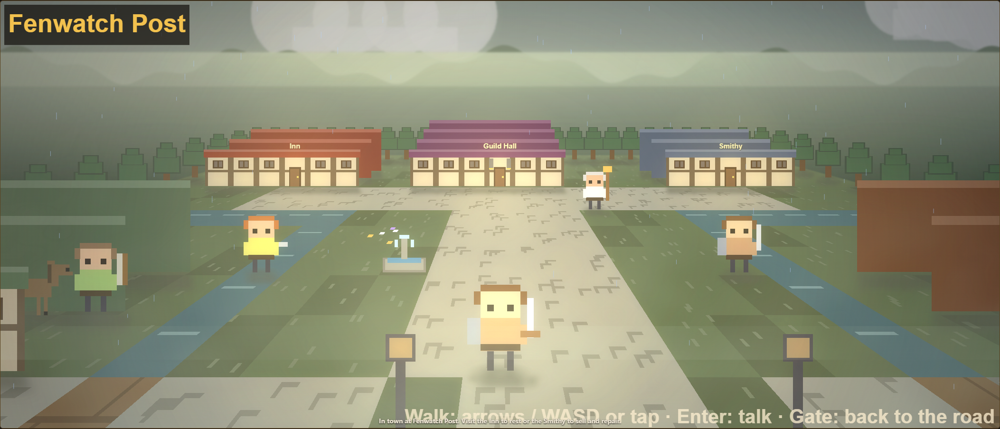
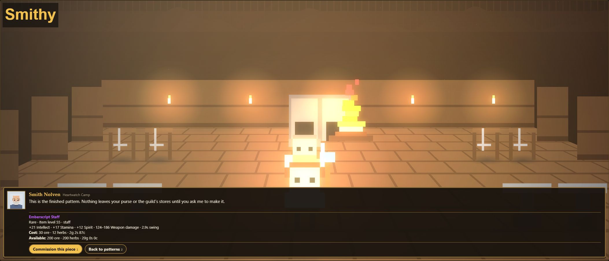

1. The world
The Reach remembers a time when crossings joined its settlements. The Sundering broke the ground and flooded old routes. The histories disagree about what moved first, but their people agree on what was lost: safe journeys, familiar neighbors and the certainty that someone would be waiting at the next fire.
The Concord rebuilds around oaths and stone. Its western kingdoms trust roads that can be defended and promises made lasting. The Wildclans of the red steppe trust kinship, traveling witnesses and honor carried between camps. Neither is a simple villain. Each believes its way kept people alive when the old roads failed. Your faction chooses a beginning and the voices you hear, rather than a shortcut past the shared journey.
Thornvale is the Concord's woodland beginning; the Wildclans start on the Redsand Steppe. Beyond them are the same fens, ridge and winter road. A drowned sanctuary and buried workings have histories of their own. Later chapters ask what a road remembers, and who should be allowed to return along it. Read the quest givers' replies: they often turn a task into a conversation.
People worth knowing
Your adventurer roster contains people with their own temperaments, greetings and recollections. Waving, helping and traveling together build relationships. Pell and Brisket belong to the Reach's quieter roadside life; the quest givers speak for their own homes and hopes. The guild eventually gives these acquaintances a shared roof, work and reasons to stay. A companion is more than a spare health bar.

Your people and your calling
Race bonuses and class descriptions below come from the current game. Choose a class whose rhythm sounds enjoyable. The descriptions are starting points: talents can change how a class contributes to a group.
| People | Faction | Racial bonus |
|---|---|---|
| Human | The Concord | Quests give 5% more experience. |
| Stonekin | The Concord | 10% more armor, +2 Stamina. |
| Grishar | The Wildclans | 5% more health. Below 30% health you deal 10% more damage. Bonds with tamed beasts 20% faster. |
| Duskelf | The Wildclans | +2% critical strike chance. |
| Class and role | Rhythm | Talent trees |
|---|---|---|
| Warrior · Tank / Damage | Plate-and-steel fighter. Builds rage by hitting and being hit, spends it on heavy strikes. | Arms / Protection / Fury |
| Rogue · Damage | Quick blades and combo points. Builds combos, then spends them on a finisher. | Assassination / Combat / Subtlety |
| Mage · Damage | Fire and frost from range. Huge damage, little health, watch your mana. | Fire / Frost / Arcane |
| Priest · Healer / Damage | Holy light and shadow. Heals and shields keep you standing through long fights. | Shadow & Light / Holy / Discipline |
| Hunter · Damage · Pet tamer | Tames wild beasts and fights beside them. Rarer beasts make stronger pets, and your bond grows with every fight. | Beast Mastery / Marksmanship / Survival |
The first stretches of road
Zone bands describe the intended journey. They are not a promise that every enemy there matches your level. Finish the available local stories, improve your equipment, and travel when you are ready.
| Place | Level band | Hubs |
|---|---|---|
| Thornvale | 1–10 | Thornvale Abbey |
| Redsand Steppe | 1–10 | Bloodstone Camp |
| Greywater Fens | 10–20 | Fenwatch Post / Mudtusk Camp |
| Ashen Ridge | 20–30 | Emberwatch Hold / Cinderhorn Outpost |
| Frostmere | 30–40 | Lanternrest Lodge / Whitebough Hearth |
2. Getting started: the first fifteen minutes
The world fills the window. Open the Quest Journal (J) or Satchel (B) from the bottom dock; Put away or Escape returns to the road. Reading pauses the world. Map holds travel and hunt targets; Field Kit keeps every other menu reachable. On a phone, swipe the dock to reach the rest. Settings, Characters and Sound are in Options.
- Create a traveler. Choose a faction, one of its races, a class, a name and a journey length. You can keep several characters in the same browser save. Start with one until the controls feel familiar.
- Follow the first quest. Creating a hero accepts the opening quest automatically. Listen to the opening questgiver’s arrival scene; the optional Road guide can help you find the next step. Read the Quests tab and compare its requested enemy or drop with the target. The world loop finds fights; the action bar is where you decide how to handle them.
- Press an ability yourself. Stay in Focus while learning. Watch your health, resource, cast bar and cooldowns rather than pressing every button at once. Rage, energy and mana support different rhythms. An unavailable action usually needs time, a resource or the right situation.
- Collect the corpse. Take loot after a fight; the L key also loots. Open Bags and compare usable equipment with what you wear. Equip upgrades yourself while building the habit that earns GearCompare.
- Return the completed quest. A finished objective is ready to turn in; select its reward. Accept the next available task and hear what the giver says. Quest chains have prerequisites, so a later chapter will not appear simply because you traveled there.
- Make a town visit. Sell junk and repair equipment. Walk the hub with arrow keys or WASD, or tap the ground. Enter the Inn and speak to its Keeper to rest; enter the Smithy and speak to its Smith to sell scraps or repair. Press Enter or walk into a person to talk. Entering a room alone spends nothing. Keeping space in Bags prevents useful drops being left behind.
Fifteen minutes is a learning route, not a timed requirement. If a fight feels too hard, inspect gear and durability, restore yourself and choose a safer target. You can take the longer journey without racing someone else's progress. Your hero begins with equipment; you do not need to buy an imaginary starter weapon before playing.
You may change journey length outside a dungeon: Breezy grants 60% more XP, Classic uses the intended baseline, and Long Road grants 40% less XP. These are XP choices, not separate stories or a guarantee of fixed completion hours.
3. Systems explained
Health, resources and money
Health is your margin for surviving a fight. Warriors spend rage, rogues use energy and combo points, and the other classes use mana. An ability's description tells you what it spends and how it helps. Resources are not shop currencies. Copper, silver and gold are ways of displaying your money, which pays for services, riding and other purchases. XP fills the next level; rested XP supplements kills rather than quest turn-ins.
Quests, Character and Bags
Quests tracks your active objectives, completion and local chains. A full log means choosing which work to finish or abandon. Character shows equipped items and derived attributes. Bags holds loot, food and items you have not equipped; it has limited room. An Upgrade label is useful advice, but check the item's slot and whether your class can use it. Keep pet food if you have a hungry companion rather than selling every unfamiliar drop.
Talents and your role
Talent points begin at level 10. Each class has three trees; deeper talents require points in their own tree. The tree with the most spent points determines your group role. Read the descriptions for reactive opportunities as well as raw bonuses: a build should change what you notice during a fight. Resetting is free below 40, and the game provides a free reset for the current tree revision; later prices rise with repeated resets and ease after days without one. Trust the price displayed beside Reset talents.
Companions and groups
Meeting adventurers, waving and helping make future invitations feel earned. A normal party is you and up to four companions. Friendship, equipment and roles matter; a healer and a tank can make difficult encounters more manageable than five damage dealers. Companion loot choices are decisions about who needs an item, not just which sale price looks largest.
Kill XP is shared with a group bonus, so it is divided rather than awarded in full to everyone. Quest rewards remain whole. That makes grouped progress different from simply multiplying solo damage, and means a measured ideal group journey is not a forecast of solo play.
Pets and the stable
Hunters tame beasts their level or lower during combat. Tame Beast channels for six seconds while the beast can still attack: prepare enough health before beginning. Pet families have different combat roles, diets and abilities. Feed appropriate food, watch happiness and build a bond through victories. Hungry pets lose effectiveness; a fallen pet needs reviving. The stable holds up to three pets and switches the active one in town.
Mounts and travel
Riding is learned in town. Apprentice Riding starts at 10; Journeyman at 20. Learning a riding skill and owning a mount are separate purchases. A mount shortens travel and improves through time ridden. Some hunter pets can be trained as mounts once they meet the displayed riding, level and bond requirements; spiders cannot carry a rider. Read the stable's conditions before saving money for a particular animal.
Rooms along the road
Every region has its own town layout. Fenwatch uses boardwalks through the marsh; Lanternrest has a snowy lodge courtyard. The Inn and Smithy have walkable interiors. Speak to the Keeper for a free rest with your companions, or the Smith for scrap sales and repairs. Read the repair price before choosing. The bottom door returns you beside the building you entered. Auto keeps its usual Smithy visit and road exit.

Supplies and the guild
Characters you are not currently playing can work the jobs board. Mining gathers ore, Herbalism gathers herbs and Questing pays the worker in XP and money. Supply progress is shared in the account's bank. Six ore make a repair kit; four herbs make a healing potion. Kits repair your equipment. Automatic potions can be switched off; when enabled, they are emergency help with a cooldown rather than limitless healing.
A guild needs a level-40 hero in town, five signatures and five gold. Your other characters and sufficiently friendly companions can sign. Members have moods, favors and work to do; ignoring them indefinitely has consequences. Guard duty contributes guild XP, guild levels improve the account's XP bonus, and higher levels expand job slots. A guild is a developing community, not an immediate grant of free raid victories.
A dependable piece from level 55
With a founded guild, choose Commission guild gear when speaking to the Smith inside a Smithy. Browse the patterns, then inspect the item, your available supplies and the full price. Missing requirements are shown plainly. Nothing is spent until you confirm; the finished equipment goes into your Bags and waits for you to equip it.
Commissions provide fixed item-level-55 rares for your class in every equipment slot. They can replace a weak piece without waiting for a lucky drop. Later dungeon, Heroic and raid rewards keep their higher item levels and special rewards. Ore and herbs come from the shared bank; the coin fee comes from this hero’s purse. The fee exceeds the item’s resale price, so commissioning to sell loses money. Keep enough supplies for repairs and potions before outfitting every slot.
| Slot | Guild ore | Guild herbs | Coin fee |
|---|---|---|---|
| Head | 18 | 6 | 1g 44s 90c |
| Chest | 24 | 8 | 1g 44s 90c |
| Legs | 20 | 6 | 1g 44s 90c |
| Feet | 12 | 4 | 1g 44s 90c |
| Hands | 12 | 4 | 1g 44s 90c |
| Weapon | 30 | 12 | 2g 2s 87c |
| Offhand | 18 | 8 | 1g 44s 90c |
| Trinket | 20 | 12 | 1g 44s 90c |

Dungeons, Journal and comfort
Dungeons shows entry levels and whether you are in the right zone. Find a group selects companions, with a fill option that helps cover roles. Normal clears unlock successive Heroic tiers; difficulty and rewards rise together. Journal records your journey and includes save tools. Settings adjusts comfort such as text size and reduced motion; Graphics can trade richer effects for performance. Sound starts off and can be enabled in effects-only or music-and-effects mode.
Use the save download or export tools before experimenting or moving devices. Browser storage is local: another browser or computer does not automatically share your characters. Importing a save is a deliberate action. This booklet does not read or modify your save.
4. Automation you earn
Auto can operate your action bar, while Focus keeps room for better timing and reactions. Focus also has an inactivity fallback, which is active at the start of a new hero: press an ability to take control. Completing a quest objective still requires choosing its reward yourself until you earn and enable QuestHelper. Its Rotation Macro improves through your own ability presses. The Addons tab shows earned tools and toggles; unlocking one does not require a purchase. Leave a tool off when you want to make that choice yourself.
| Addon | Earn it by | What it does |
|---|---|---|
| AutoLoot | Loot 60 corpses by hand | Loots every corpse for you, items included. |
| Vendor Sweep | Sell 40 junk items by hand | Sells junk whenever you reach a vendor, and sends you to town when your bags fill up. |
| QuestHelper | Complete 12 quests | Turns in finished quests, picks the better reward, and accepts the next quests in your zone. |
| GearCompare | Equip 12 items by hand | Equips upgrades automatically when you pick them up. |
| Rotation Macro | Press 500 abilities yourself | Makes Auto mode play your action bar better. Rank 2 at 2,000 presses, rank 3 at 6,000 (catches openings half the time). |
| PetCare | Feed your pet 20 times by hand | Feeds your pet when it gets hungry, and buys meat when you visit town. |
| LFG Tool | Clear dungeons 3 times | Re-runs your chosen dungeon with the same group as soon as you clear it. |
QuestHelper handles available work in your current zone; it does not remove story prerequisites or dungeon attunements. LFG re-runs the selected dungeon with the same group after a clear. Turn that repeat tool off, or leave the run, when you intend to travel rather than farm. PetCare belongs to Hunters and still needs food or the money and opportunity to buy it.
Returning after time away can award simulated hunting gains and rested XP; the offline calculation caps time at a day. Benched characters rest rather than all hunting as your active hero, while assigned jobs have their own payouts. Offline progress is useful, but it does not perform a careful first dungeon or teach you its tells.

Open the separate tips-and-tricks booklet →
5. Tips for a steadier journey
- Repair before a harder trip. A better weapon does not help as much when its durability has been neglected. Death damages gear; revisit the vendor or use an earned kit.
- Finish the local chain. A later quest may require an earlier one. Moving to a new region early can leave your story behind your level.
- Practice the warning buttons. React to Combo with C and Dodge with D when offered. Active play has opportunities that an untouched action bar misses.
- Choose a coherent first build. Read one tree's deeper requirements before spreading points across all three. Warriors who want to hold enemies should look at tank talents; priests supporting a group should read their healing tree. These are purposes, not a claim that one build wins every encounter.
- Keep someone who can heal. Consider party roles, companion level and friendship before entering a dungeon. Do not assume the fill button turns underprepared gear into an easy boss.
- Save for both riding purchases. A riding lesson alone does not provide an animal. Compare the stable's skill and mount prices before spending everything on the first service you see.
- For Hunters, prepare the tame. Choose a manageable beast and keep compatible food. Rarity can improve a pet, but surviving the channel and caring for the animal matter first.
- Use a gentler pace without guilt. Breezy changes XP, not the worth of your character. If you prefer the longer route, Long Road gives more room to live with the same places.
The launch audit measures a deterministic, well-managed Focus group with workers and ideal reactions. Its hours are useful for balancing, not a deadline for a new player. Different builds, solo adventuring, Auto and time spent reading give different journeys.
6. Spoilers: the eastern road
Spoiler warning: late regions, dungeon bosses and the raid
The Barrowfields uncover the Wayfolk's road-stones and burial customs. The Hollow Crown grows around an empty throne; its sickness binds wood and beast to a seat no one should inherit. In the Crown's Heart, Trailwarden Aven and Rootscout Neral help prepare a way onward. Their purpose is a return path for others, rather than a new claimant to the crown.
| Place | Level band | Hubs |
|---|---|---|
| The Barrowfields | 40–45 | Lanternrest Lodge / Whitebough Hearth |
| The Hollow Crown | 45–52 | Thornmantle Camp |
| The Crown's Heart | 52–60 | Heartwatch Camp |
The five dungeons
These are minimum entry levels, not recommended solo levels. You must be in the dungeon's region with four eligible companions. Heroic tiers unlock one after another from your recorded clear, separately for each dungeon.
| Dungeon | Entry level / region | Bosses |
|---|---|---|
| The Drowned Sanctum | 17 · Greywater Fens | Tide Warden Ossak → Mother Murk → Ysh'Kara, the Tide Beneath |
| The Cindervein Foundry | 27 · Ashen Ridge | Foreman Dravok → The Crucible Matron → Veyr, Heart of the Mountain |
| The Silent Barrows | 42 · The Barrowfields | Ordel, Keeper of the Unlit Wick → Selnith, the Doorweaver → The Last Wayward |
| Rootrot Hollow | 49 · The Hollow Crown | Neldrath, the Ringkeeper → Ossavine, the Tangled Span → Arveth, the Hoard Below |
| The Heartwood Vault | 56 · The Crown's Heart | Thessurel, the Inward Voice → Vaulkris, the Goldweb Veil → Orethul, the Hoardfast |
The Hollow Key and The Hollow Throne
The final three Crown's Heart quests require clears of the Silent Barrows and Rootrot Hollow. Completing ch14, A Road Past the Throne, finishes the Hollow Key attunement. At level 60 it opens The Hollow Throne: you and nine eligible raiders, with at least two tanks and two healers counting your own role. Your companions, other characters and a founded guild's adventurers can contribute.
Seraveth, the Ashwing matriarch, waits beyond the approach. Before a living boss you choose a plan; during the encounter the raid's tells ask for calls such as Swap, Adds, Spread and Stack. Read the displayed mechanic rather than treating every call as a button to press on cooldown. Clearing the raid earns Raid Leader, improving Auto's calls. The raid has its own boss lockout; it is not simply another unlimited Heroic rung.
Legendary beasts in the regions can leave reins behind. A rumor is not a guaranteed drop, and no particular rare mount is required to complete the story. Late discoveries should give you reasons to revisit the Reach, not make its earlier companions disposable.
About this booklet
The setting follows the lore record. Mechanics follow the game's current source, with the reference tables generated directly from its data. Unbuilt regions and other proposed systems are deliberately excluded. Walk-in town services and guild commissions described here are available in the browser game. This is the Realmbound portion of T8; other published guides are on the shelf.